Linux TD2 – MySQL/MariaDB
Installation : Tunnel : 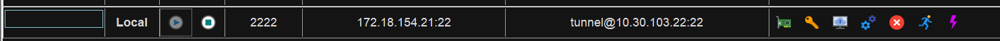
SSH Vm2 : 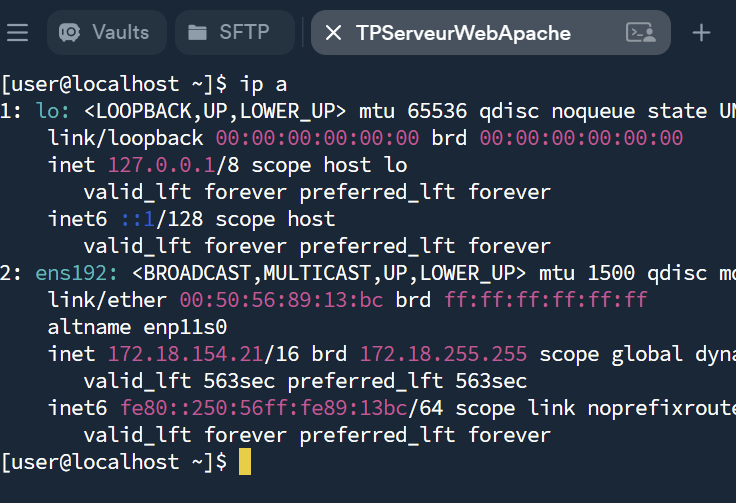
2 : Désactivation du pare-feu.

3 : Installation
Installez le package mariadb-server
a) Installez le package mariadb. Que contient ce package ?

Le package contient toutes les dépendances ci dessus.
b) Qu’est ce que mariadb par rapport a mysql ?
MariaDB est un fork de MYSQL, crée par les créateur de MYSQL. MariaDB est une version indépendante.
4 : Prise en main
a) Quel est le fichier de configuration de configuration de mariadb ?

b) Quel est son format ?
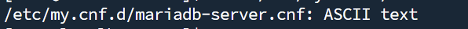
c) Quel est une de ses particularités ?
Le fichier de configuration est bien organisé et bien rangé.
d) Quel est le répertoire de travail utilisé par le serveur pour stocker les bases de données?
Le dossier est /var/lib/mysql
e) Cet emplacement vous semble-t-il pertinent ? Justifiez votre réponse.
Non car il se trouve sur le disque principal et si le disque est pleins alors les bases de données seront vites limités en stockages.
f) Proposez une configuration plus conforme a celle d’un serveur de production.
Il faudrait : un disque spécifiquement pour le serveur mysql. Puis copier les données du dossier à l'autre avec
5 . Démarrez le service mariadb
a) Sur quel port est a l’écoute le service mariadb par défaut ? Quelle commande avez-vous utilisé ?
Par défaut mariadb écoute sur 3306. 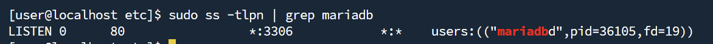
b) Sur quelle·s IP le service est-il a l’écoute ?
Le service est à l'écoute sur toutes les l'adresses 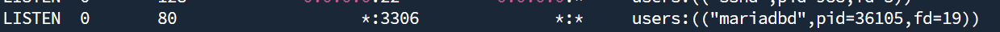 On le voit avec le "*".
6 . Connexion au service
a) Quelle commande vous permet de joindre votre serveur mariadb ?
sudo mariadb
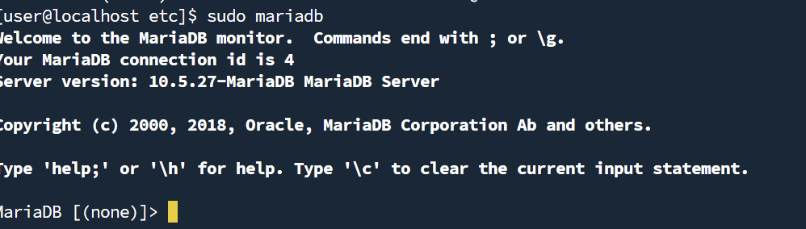
b) Que permet de faire l’option --protocol ?
Permet de forcer le protocole utilisé. Tel que tcp par exemple.
c) Quelle est l’autre méthode permettant de joindre un service mariadb ? Quelle est sa limite ?
On peut utiliser un socket unix. Cependant cela fonctionne que en Local.
d) Quel est le protocole utilisé par défaut par le client (cf la commande précédente ) pour joindre le service mariadb ? Comment l’avez vous prouvé ?
 La commande
La commande status permet d'affichger le protocole utilisé. on voit ici qu'on se connecte en socket unix vial a commande sudo mariadb.
7 . Sécurisation
a) Quel est le compte administrateur utilisé par mariadb ?
Le compte est root
b) Que ce passe-t-il si vous tentez de vous connecter sur le service mariadb et utilisant l’IP de la VM ? (l’IP , pas l’adresse de bouclage!!)
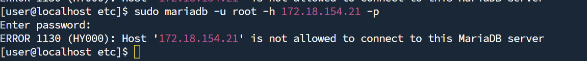 On se fait refuser la connection.
c) Que ce passe-t-il si vous utilisez l’adresse 127.0.0.1. Comment avez-vous prouvé que vous êtes bien connecté en TCP/IP. Quelle commande avez-vous utilisé pour le prouver ? Quelle commande avez-vous utilisé pour vous connecter ?
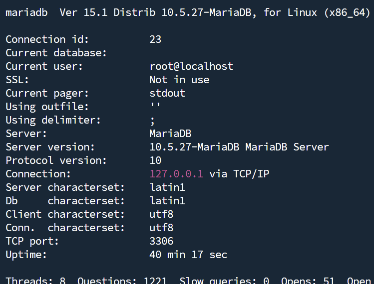
d) Même question que précédemment, mais en utilisant localhost.
Et maintenant ça marche :

e) Vous avez constaté que le serveur ne demande jamais de mot de passe. Sur quoi repose la sécurité des données ? Quels sont les risques sur un serveur de production hébergeant par exemple un service Apache, Tomcat ou autre et le service mariadb ?
Le problème est que le mot de passe est quelque chsoe de privé et l'user un truc en autre publique donc si quelqu'un arrive à être root il pourra directement se connecter sans mdp.
Le script mysql_secure_installation permet de sécuriser une installation de mariadb.
sudo mysql_secure_installation
Fixer un mdp pour le compte root
Supprimer le compte anonyme
Autorisez les accès distants pour le compte root
Laissez la DB test sur le serveur
Accepter l’application immédiate des changements (Flush des privilèges)

8 . Création d'une DB via un script SQL
a) Créer la DB worlddb. Comment avez-vous procédé ?
b) Affichez la liste des DB gérées par mariadb ?
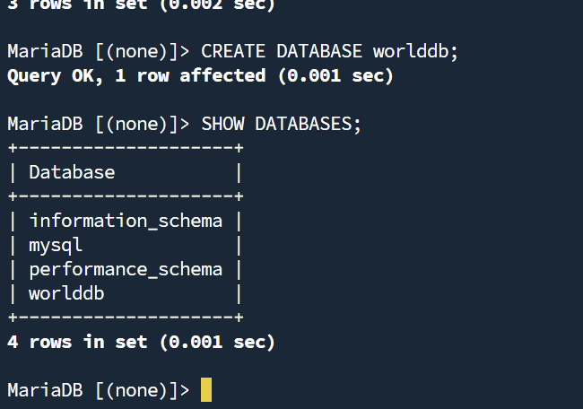
c) Injecter le script WORLDDB-FINAL-UTF8.sql. Quelle commande avez vous utilisée ?

Il faut envoyer le fichier dans worlddb.
d) Quelles sont les tables présentes ? Quelle commande avez vous utilisé ?

e) Combien de pays sont stockés dans la DB ?
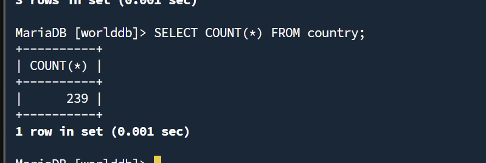
f) Donnez un schéma de la DB.
country

city

countrylanguage
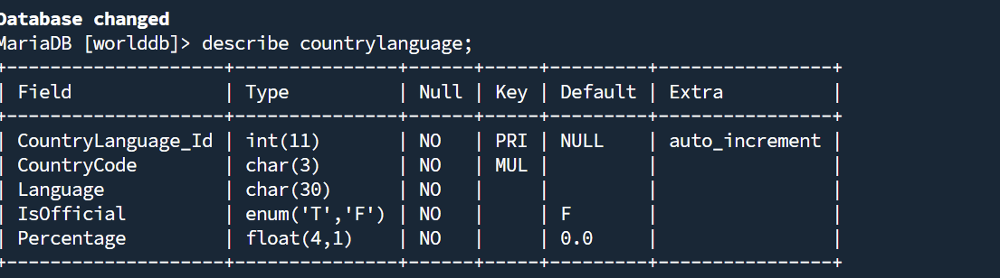
g) Le fichier sakila-db.zip contient une DB de démonstration.

 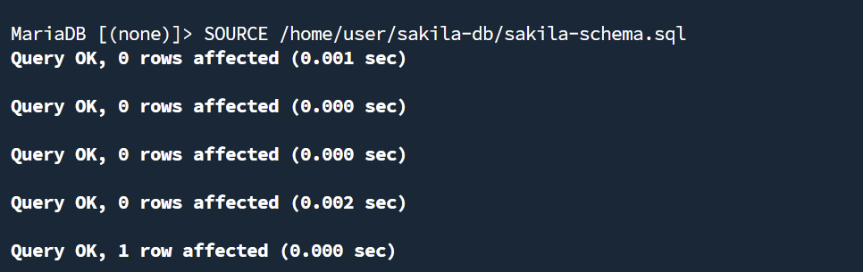
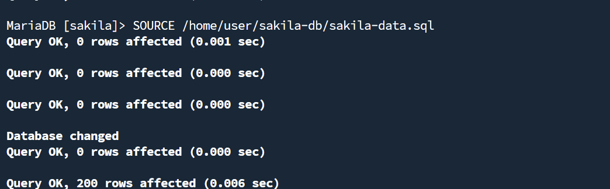
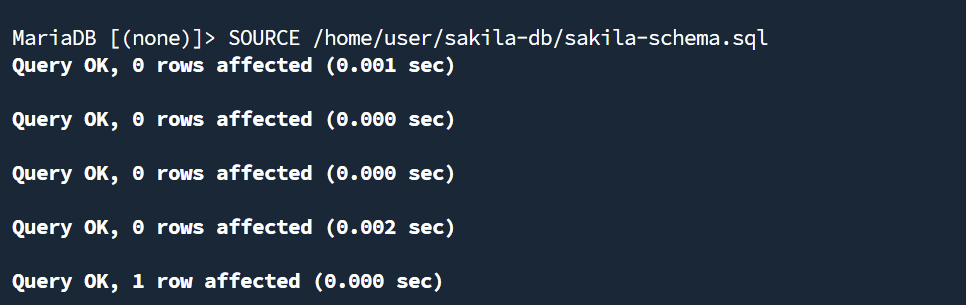
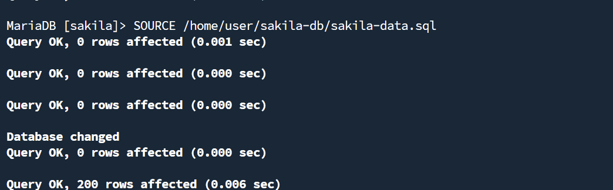
h) Affiché les 5 premiers acteurs de la DB sakila (table actor)

I) Quelles sont les DB gérées par le serveur ?
Celles-la : 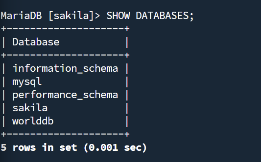
j) Supprimez la DB sakila, et vérifiez la suppression. Quelles commandes avez vous utilisées ?
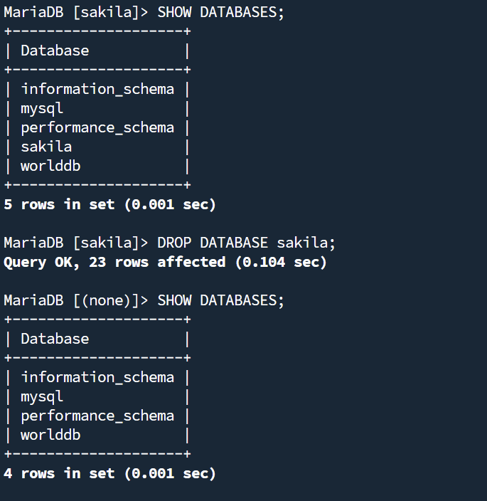
9 . Gestion des comptes et accès
a) Quelles seraient les conséquences possibles si l’application web, par exemple, présente des failles de sécurité ?
Les conséquences seraient : - Une fuite de données - Une modifications de données
b) Qu’est ce qu’une injection SQL ?
Une injection SQL est un type d'attaque où l'attaquant envoie une requete SQL dans un formulaire.
c) Créez un compte « worldbuser ». Quelle commande SQL permet de créer un utilisateur ?

d) Donnez tous les droits a l’utilisateur « worldbuser » sur la DB « worlddb ». Quelle commande SQL permet de donner tous les droits sur une DB a un utilisateur particulier ?
 "*" signifie toutes les tables de la base worlddb
"*" signifie toutes les tables de la base worlddb
e) Quelle commande SQL permet de voir les permissions pour un utilisateur ? Quels sont les droits pour l’utilisateur « worlddbuser » ?
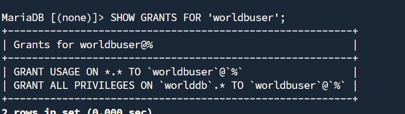
f) A quoi sert la commande SQL « FLUSH PRIVILEGES ; » ?
Elle permet de recharger la table de permissions.
g) Comment prouver que les accès sont bien fonctionnels pour le compte « worlddbuser ».
En se connectant à worlddbuser 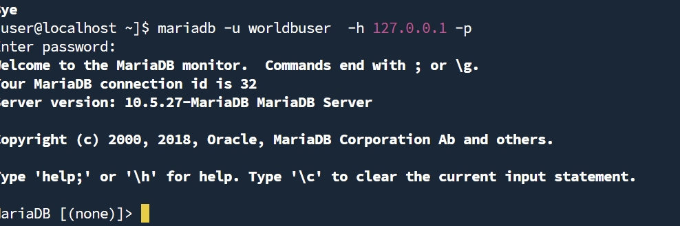
h) Quelles sont les tables accessibles avec le compte « worlddbuser ». Quelles commandes avez-vous utilisées pour le prouver ?
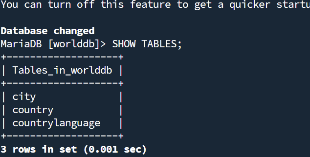
i) Quelle commande SQL permet de révoquer des droits ?
La commande par exemple pour revoke les droit à worlddb à worldbuser :
j) A quoi sert le script mysql_setpermission ?
mysql_setpermission est un script qu iguide l'admin à travers plusieurs questions pour mettre des permissions.
k) A quoi sert le script mysqlaccess ?
mysqlaccess est un script utilisé pour vérifier si un utilisateur possède des permissions.
10 . Sauvergarde et restauration
a) Quels sont les principaux dangers liés à une mauvaise sécurité ?
- Perte de données
- Vols de données
b) Changer la population de tous les pays en la fixant a 10. Donnez la commande utilisée.

c) Faire une sauvegarde de la DB « worlddb » en nommant le script dump-worldb.sql.
d) Quelle commande est utilisable pour faire une restauration d’une DB ?
e) Qu’est ce qu’une sauvegarde logique ?
Une sauvergarde logique consiste à exporter des données dans un format qu'un humain peut lire.
f) Quels sont les différents type de sauvegardes physiques ?
- Cold Backup : serveur arrêté
- Hot Backup : serveur en cours d'execution
g) Quelles autres commandes sont utilisées pour faire une sauvegarde ?
h) Quel type de sauvegarde est proposé ?
Une sauvergarde incrémentielle.
i) Quels avantages présente-t-il ?
Les avantages : - Plus rapide car elle sauvergarde que les nouvelles données. - Prend moins de place sur le disque.
j) Quels sont les problèmes posés par ce type de sauvegarde ?
Plus compliqué à restauré.
11 . Outils graphiques.
a) Quel est l’intérêt d’une connexion a travers un tunnel SSH ?
L'intérêt d'une connexion à travers un tunnel SSH est : - le chiffrement des données - le contournement des pare-feu
12 Réplication comme solution de sauvegarde ?
a) Quels sont les limites de la réplication ?
Si l'admin supprime des données sur le serveur maitre alors tout le monde aura les données supprimés Si les données sont deviennent corrompues, la corruption sera aussi sur les esclaves.
b) Quels sont les usages courant des serveurs de réplications? (https://mariadb.com/kb/en/mariadb-maxscale-22-maxscale-failover-with-keepalived-and-maxctrl/)
-
HIGH AVAILABILITY : Si le MAITRE tombe en panne alors l'ESCLAVE peut devenir le nouveau MAITRE
-
LOAD BALANCING : Une app qui utilisent beaucoup de données simultanément peut répartir les perfommances sur les esclaves pour être plus perfomants.
c) Créez une nouvelle VM, installez mariadb et les outils nécessaires
d) Vérifiez la connectivité entre les VMs
Ping : 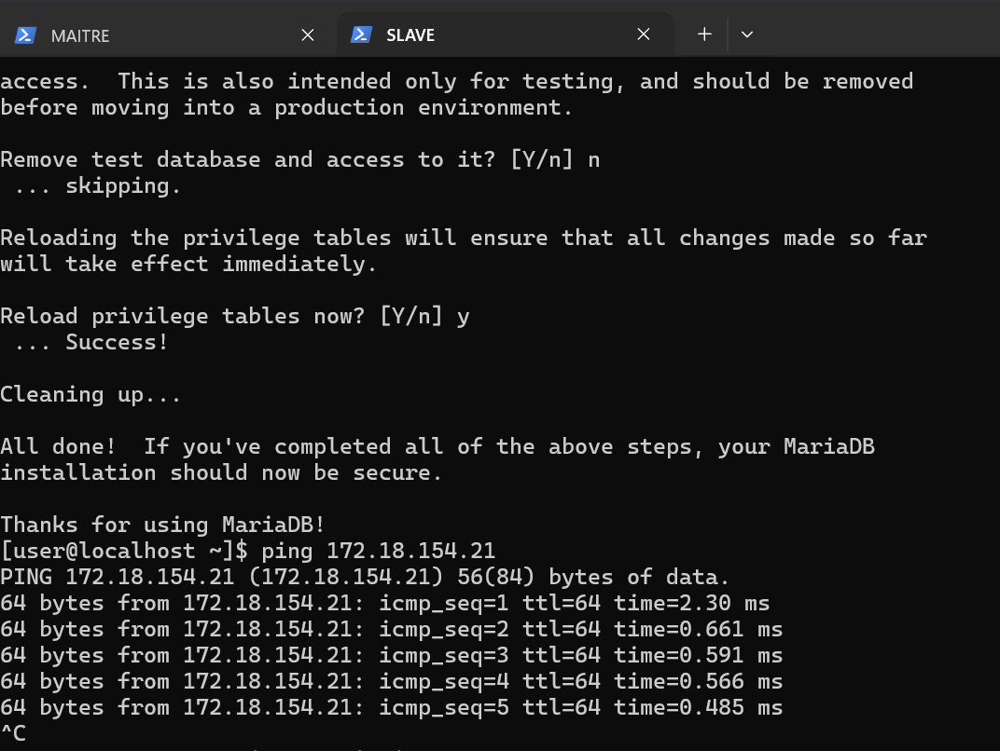
Accès à mariadb depuis esclave :

### e) Configuration du serveur maitre (/etc/my.cnf.d/server.cnf, ne pas oublier de redémarrer le service après la création du fichier)

e) Création d’un compte pour la réplication ou attribution des droits sur un compte existant sur le serveur maitre
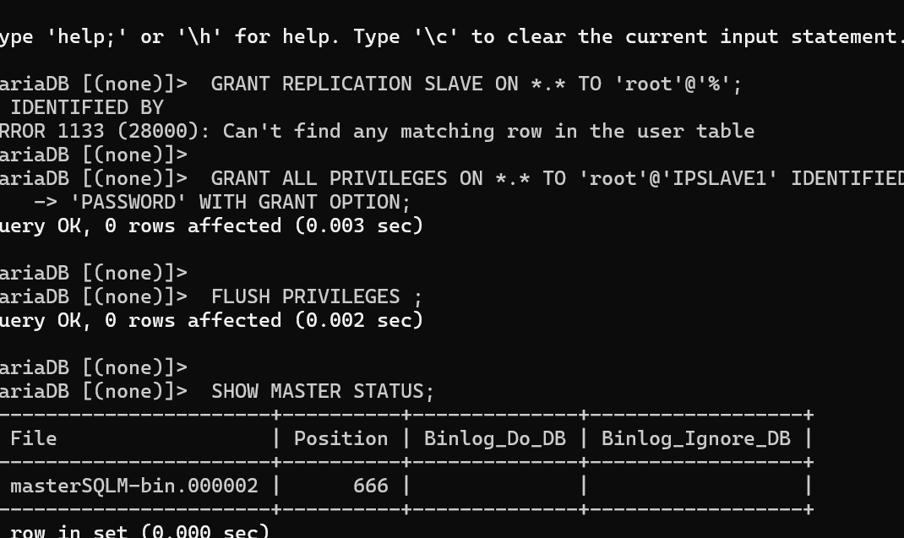
g) Configuration des esclaves (/etc/my.cnf.d/server.cnf)